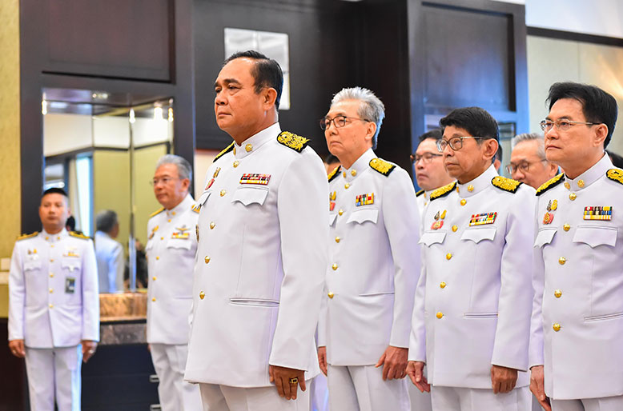

ข้อวิจารณ์
รองศาสตราจารย์ ปวิน ชัชวาลพงศ์พันธ์ กล่าวถึงพลเอกประยุทธ์ว่า เขามักปรากฏทางโทรทัศน์แห่งชาติและแลกเปลี่ยนปัญหาและวิธีแก้ไข เขาต้องการพิสูจน์กับประชาชนว่าเขาเป็น "นายรู้ไปหมด" ซึ่งสันนิษฐานได้ว่าเพราะเขาต้องการส่งสารว่าเขาฉลาดกว่ายิ่งลักษณ์ ปวินยกตัวอย่างภูมิปัญญาของพลเอกประยุทธ์ดังนี้ เขาว่าชาวใต้ควรลดการปลูกยางเพื่อแก้ไขปัญหาราคายางตกต่ำ
เขาว่าถ้าคนไทยทุกคนช่วยกันเก็บผักตบชวาจากแม่น้ำแล้วมันจะสูญพันธุ์, เขาว่าอุทกภัยเป็นภัยธรรมชาติ และว่าคนไทยสมัยก่อนปลูกบ้านบนที่สูง บ้างยกพื้นสูง บ้างอาจซื้อเรือ, เขาว่าการบ้านยากเกินไปสำหรับนักเรียน และว่าตนยังทำการบ้านนักเรียน ป. 1 ไม่ได้, เขาให้ชาวนาลดการปลูกข้าวหรือปลูกพืชชนิดอื่นหรือเปลี่ยนงานเกษตรเพื่อแก้ปัญหาราคาข้าว, เขากล่าวถึงปัญหาความยากจนโดยว่า โทษตัวเอง ขยันแล้วหรือยัง, เขาแนะนำคนไทยไม่ให้ช็อปปิงเพราะคนไทยเป็นหนี้จากสถาบันการเงิน
วันที่ 16 กันยายน พ.ศ. 2557 พลเอกประยุทธ์แถลงเรื่องนักท่องเที่ยวชาวอังกฤษ 2 คนซึ่งถูกฆ่าที่เกาะเต่าเมื่อวันที่ 15 กันยายน ว่า "ปัญหาเกี่ยวกับความปลอดภัยของนักท่องเที่ยวมีอยู่เสมอ พวกเขาคิดว่าประเทศของเราสวยงามและปลอดภัย ก็เลยทำอะไรที่อยากทำ พวกเขาใส่บิกินี่และเดินไปไหนก็ได้ พวกเขาคิดว่าใส่บิกินี่แล้วปลอดภัยเหรอ...เว้นแต่ว่าไม่สวย" ฝ่ายแอนดรูว์ โรซินเดล (Andrew Rosindell) คณะกรรมาธิการวิสามัญการต่างประเทศของสภาสามัญชน กล่าวว่า "เมื่อผู้ที่รักของผู้เสียหายกำลังอาลัยอาวรณ์ความสูญเสีย เป็นสิ่งไม่เหมาะสมและไม่ละเอียดอ่อนที่มีผู้กล่าวหาผู้ที่ถูกพรากชีวิตไป ยิ่งไม่ต้องเอ่ยถึงนายกรัฐมนตรีของประเทศซึ่งเกิดการฆ่านั้น" อีกสองวันถัดมาพลเอกประยุทธ์ได้กล่าวขอโทษต่อกรณีนี้
วันที่ 8 ตุลาคม พ.ศ. 2557 เว็บไซต์ประชาไทรายงานว่า พลเอกประยุทธ์กล่าวตอนหนึ่งว่า จะส่งเสริมให้คนทั้งโลกกินข้าว ขนมจีน กินขนมปังแล้วจะอ้วน วันเดียวกัน เว็บไซต์รัฐบาลไทยรายงานว่า พลเอกประยุทธ์ว่า อุทกภัยในภาคใต้เป็นเรื่องปกติ ปีหนึ่งเกิดสี่ครั้ง เกิดจากน้ำเหนือไหลผ่านภาคกลางลงสู่ภาคใต้ ในรายการคืนความสุขให้คนในชาติ
วันที่ 10 ตุลาคม พ.ศ. 2557 เขากล่าวตอนหนึ่งว่า ถ้าอยากมีรถไฟทางคู่ มีรถใหม่ มีรถความเร็วสูงเหมือนต่างประเทศ ให้หาเงินมา
ชีวิตส่วนตัว
ชื่อเล่นของประยุทธ์คือ "ตู่"และผู้สนับสนุนมักเรียกเขาว่า "บิ๊กตู่" หรือ "ลุงตู่นราพร จันทร์โอชา ภรรยาของเขากล่าวว่า ประยุทธ์สวม "ชุดแบบอังกฤษ" สวมรองเท้าของเชิร์ชส์ และเสื้อสูทสั่งตัดที่ "บรอดเวย์"เขาฟื้นฟูการสวมชุดพระราชทาน ซึ่งเปรม ติณสูลานนท์เคยทำให้เป็นที่นิยมครั้งแรกในคริสต์ทศวรรษ 1980 และได้สั่งการให้คณะรัฐมนตรีสวมชุดพระราชทานในการประชุมแทนชุดสูทตะวันตก
ประยุทธ์กล่าวต่อสาธารณชนว่าเขาปรึกษากับโหรวารินทร์ บัววิรัตน์เลิศเป็นประจำในช่วงที่ดำรงตำแหน่งนายกรัฐมนตรีแรก ๆ เมื่อเขาเป็นไข้และปวดเมื่อย เขาโยนโรคนี้ว่ามาจากการร่ายมนตร์ของศัตรูทางการเมืองและขจัดโรคภัยไข้เจ็บด้วยน้ำศักดิ์สิทธิ์นอกจากนี้ บางกอกโพสต์ ยังรายงานว่าประยุทธ์มีชุดสะสมแหวนนำโชค ซึ่งเขาผลัดเปลี่ยนไปทุกวันตามกิจกรรมในวันนั้น และเขายังสวมสร้อยข้อมือขนช้างเพื่อขจัดโชคร้ายอีกด้วย
ในช่วงการระบาดทั่วของโควิด-19 ประยุทธ์ต้องจ่ายค่าปรับ 6,000 บาทจากการไม่สวมหน้ากากอนามัยในการประชุมวัคซีนโควิด-19 เมื่อเดือนเมษายน พ.ศ. 2564ในฐานะนายกรัฐมนตรี พลเอก ประยุทธ์ได้รับเงินเดือน 75,900 บาทต่อเดือน บวกกับ "เบี้ยเลี้ยงตำแหน่ง" อีก 50,000 บาทต่อเดือน เขาไม่ได้เงินเดือนในฐานะรัฐมนตรีว่าการกระทรวงกลาโหม
การถวายสัตย์ปฏิญาณไม่ครบ
วันที่ 16 กรกฎาคม พ.ศ. 2562 พลเอกประยุทธ์นำคณะรัฐมนตรีไทย คณะที่ 62 เข้าเฝ้าฯ พระบาทสมเด็จพระวชิรเกล้าเจ้าอยู่หัว เพื่อถวายสัตย์ปฏิญาณก่อนเข้ารับหน้าที่แต่หลังจากนั้น ในวันที่ 25 กรกฎาคม ปีเดียวกัน ก่อนการแถลงนโยบายของรัฐบาลต่อรัฐสภา รศ.ดร.ปิยบุตร แสงกนกกุล เลขาธิการพรรคอนาคตใหม่ ได้หารือกับชวน หลีกภัย ประธานรัฐสภา โดยได้ตั้งข้อสังเกตว่าพลเอกประยุทธ์ถวายสัตย์ปฏิญาณไม่ครบถ้วนตามที่บัญญัติไว้ในรัฐธรรมนูญแห่งราชอาณาจักรไทย พุทธศักราช 2560
ทำให้มีผู้ยื่นคำร้องในเรื่องนี้ต่อผู้ตรวจการแผ่นดินถึง 2 ราย โดยผู้ตรวจการแผ่นดินได้เสนอเรื่องต่อศาลรัฐธรรมนูญ 1 กรณีแต่ศาลมีมติไม่รับคำร้องดังกล่าว
นอกจากนี้ประเด็นนี้ยังนำไปสู่การเปิดอภิปรายทั่วไปตามรัฐธรรมนูญมาตรา 152 เพื่อซักถามข้อเท็จจริงเกี่ยวกับการถวายสัตย์ปฏิญาณของพลเอกประยุทธ์เมื่อวันที่ 18 กันยายน ซึ่งเป็นวันสุดท้ายก่อนปิดสมัยประชุมสภาอีกด้วย